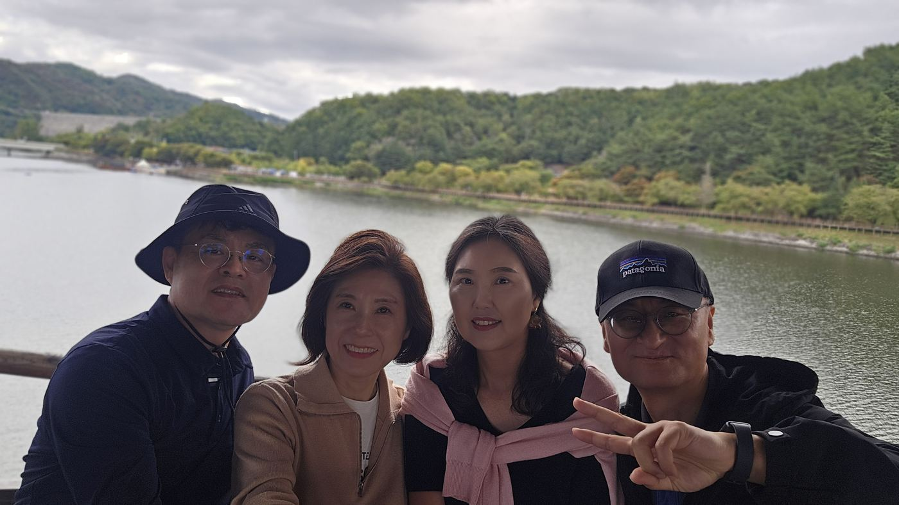
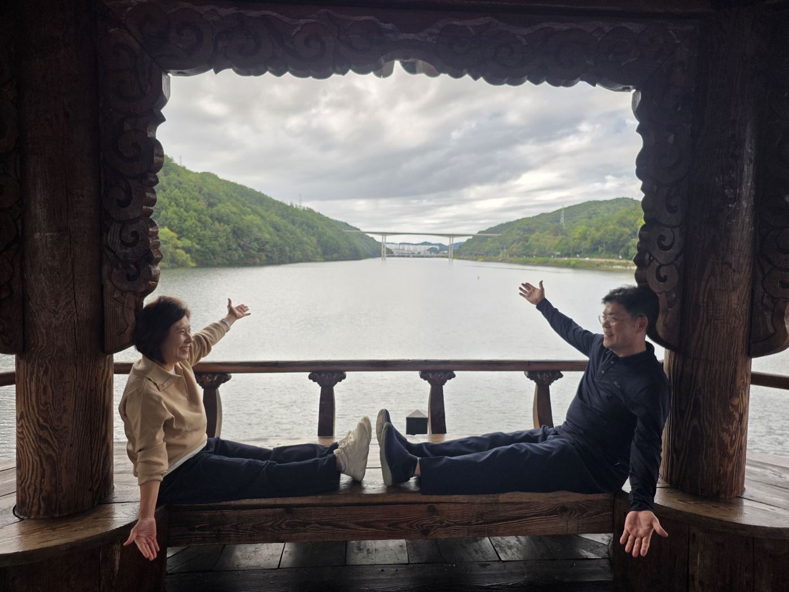
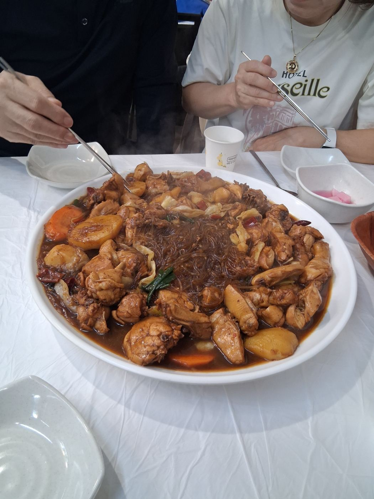
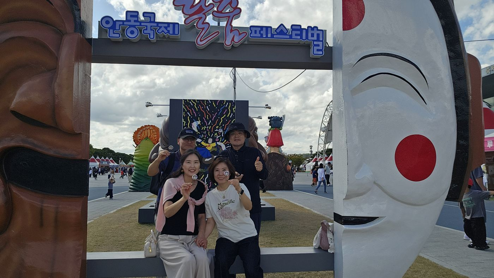
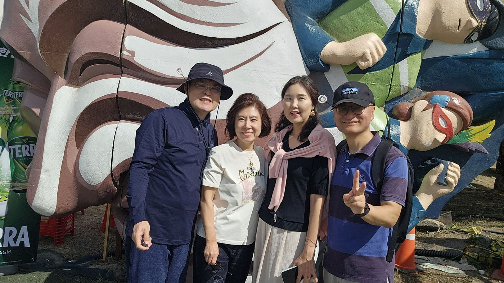
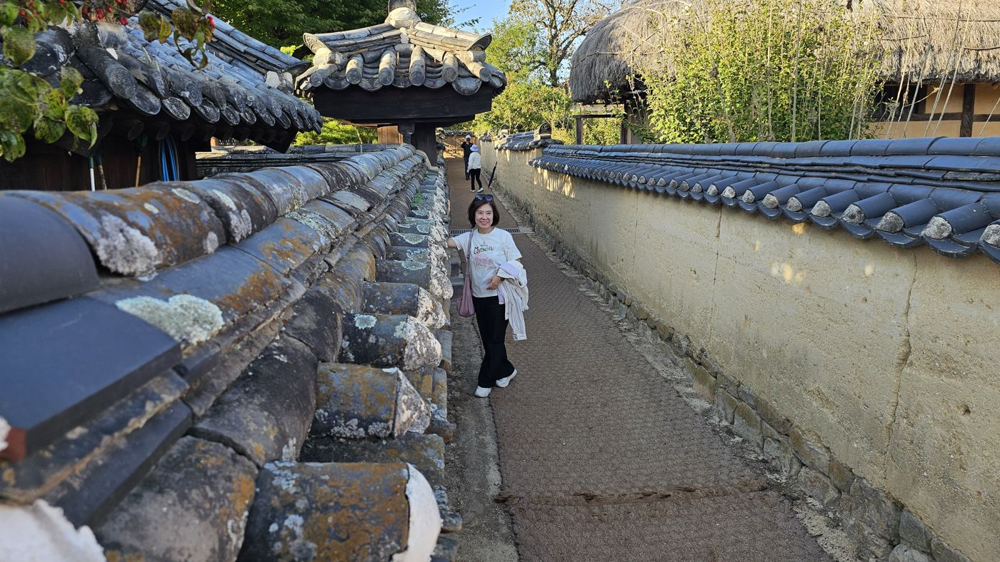
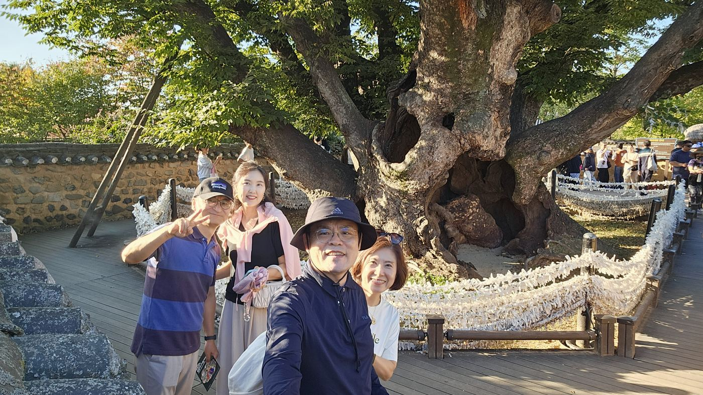
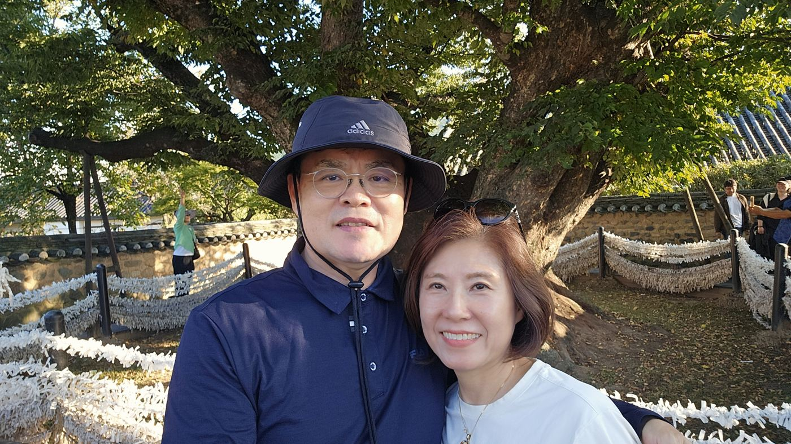
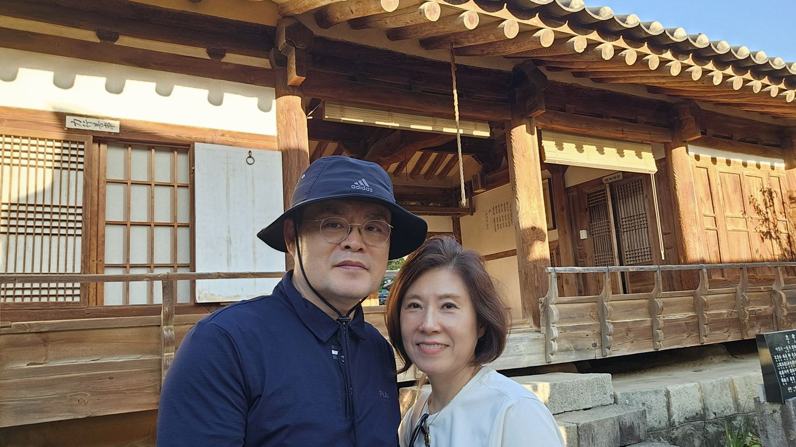
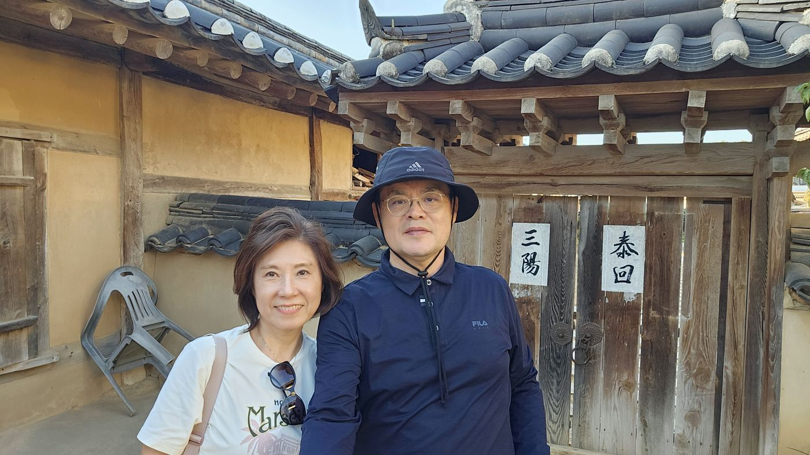

10:40 – 10:43 · 월영교 · 월영정
월영교 — 넷이 한 화면에
흐린 오전, 안동댐 아래 월영교에서 하루를 시작함. 친구 부부와 넷이서 나무다리를 건너 강 한가운데 정자 월영정까지 걸음.

10:40
10:4311:47 · 안동 시내 (구시장 찜닭골목 일대, GPS 기준 추정)
점심 — 안동에 왔으면 찜닭부터
월영교에서 시내로 이동해 점심. 안동 일정의 필수 코스.

11:4713:19 – 13:56 · 안동국제탈춤페스티벌
탈춤페스티벌 — 탈보다 큰 웃음
축제장은 거대한 탈 조형물이 곳곳에 서 있는 포토존 천국. 햇볕이 나면서 겉옷을 벗고 가벼운 차림으로 바뀜.

13:56
13:1916:29 – 16:51 · 하회마을
하회마을 — 흙담 골목과 600살 느티나무
오후 햇살이 비스듬히 들 때 하회마을에 도착. 흙담 골목을 지나 마을 한가운데 삼신당 느티나무까지 걸음.

16:29
16:33
16:32
16:50
16:5117:00 이후 · 하회마을 → 집
귀가 — 다음 여행은 어디로?
오전 월영교, 점심 찜닭, 오후 탈춤과 하회마을까지 안동 핵심만 하루에 꾹꾹 눌러 담음. 같은 장면이 겹친 월영정 사진 1장은 빼고 10장을 남김. 다음 편은 3주 뒤 영월.